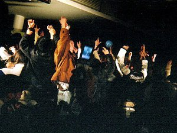
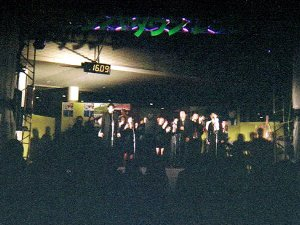
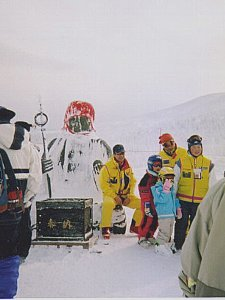

蔵王 | ２００３年１２月２９日〜２００４年１月３日 |
|---|---|
 写真１ |  写真２ |
| 昨年末から今年初にかけて山形県に行ってきました。もちろん目的は雪山で、暖冬といわれて心配しましたが雪は”たんまり”ありました。蔵王温泉とそのゲレンデ、年末のカウントダウンの状況を旅の結果として掲載します。 なお、写真2,3,4で示したカウントダウンの会場は山形市内であり、毎年行っているそうです。今回は物まねからゴスペル、カウントダウンを見ることができました。 名物ご馳走様＝玉こんにゃく（100円）、そば、ハタハタ塩焼き、山形牛の焼肉丼 写真１ ＺＡＯ温泉 上湯＝ＺＡＯ（山形蔵王）ＳＫＩ場は温泉街があります。共同浴場として上湯と下湯があります。共に入湯料200円。脱衣所と湯船は別。どちらも１０人程度入湯可能。私的にお湯の中に段差がある下湯が好き。湯温が高いと感じました。 写真２ カウントダウン 20ＳＥＣ＝年の変わる20秒前。まわりがザワツキ始める。 | |
|  写真３ |  写真４ |
| 写真３ カウントダウン ＺＥＲＯ＝年の変わり、会場が大騒ぎの状態。みんながジャンプして喜ぶ（ジャンプして写真を撮ったためＺＥＲＯは同時撮影できませんでした） 写真４ カウントダウン ゴスペル＝ゴスペル隊から遠いけど、すばらしかった。私も手拍子＆横揺れ、ハミングをしてしまう。 | |
|  写真５ |  写真６ |
| 写真５ 蔵王地蔵＝ゲレンデの頂上（地蔵山）には地蔵があり撮影スポットになっています。ＳＫＩ上達をお祈りをしてきました。 写真６ 地蔵山頂上 樹氷＝一面真っ白です。景色にあるのは空の青色と白の２色のみ。 ちなみに木の雪てんこ盛り状態を”モンスター”というそうです。樹氷コースでなく”モンスター”コースですよね。 コメント＆写真 by シュガー | |